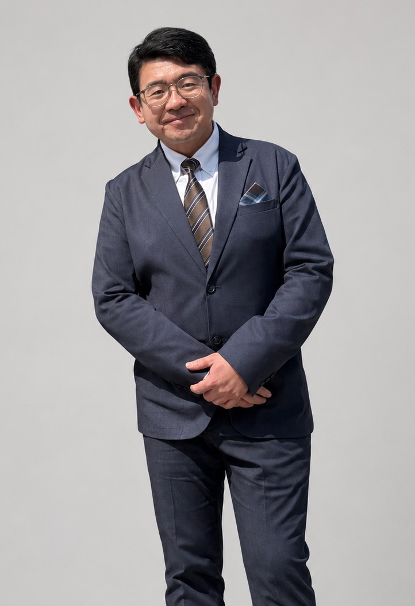

Representative Director
賈思超
1984年生まれ。北京理工大学卒業後、中国海関で約9年間勤務。2017年に来日し、レッサーパンダ株式会社を設立しました。
創業後は、京都での不動産投資及び民泊事業、大阪でのインターネットカフェ事業、そして現在の電子商取引事業へと、事業環境の変化に応じて会社の方向性を見直してきました。現在は、EC事業の安定運営、AIを活用した業務改善、創業・経営・投資に関する情報提供事業の検討に取り組んでいます。
Message
ご挨拶
略歴
- 1984年生まれ
- 北京理工大学 卒業
- 中国海関にて約9年間勤務
- 2017年 来日、レッサーパンダ株式会社を設立
- 不動産投資、民泊、インターネットカフェ、EC事業を経験
現在の重点分野
- EC事業の安定運営
- AIを活用した業務改善
- 人材採用と業務分担
- 創業・経営・投資関連情報コンテンツの検討